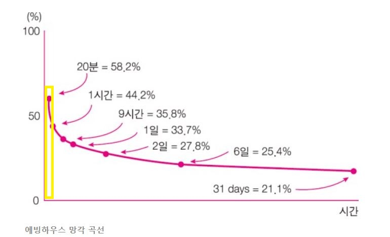

Curriculum
어떤 수업이 우리 아이에게 맞을까요?
학년과 학습 상태에 따라 최적의 수업 방식은 달라집니다.
생각의힘은 아이에게 맞는 환경을 먼저 찾습니다.
학년이 올라갈수록
학습의 밀도가 결정합니다
초등~중등 1학년은 수학의 언어를 처음 배우는 시기입니다. 이 시기에는 개념을 정확히 이해하고 손으로 직접 쓰는 훈련이 무엇보다 중요합니다. 속도보다 습관이 먼저입니다.
중등 2학년부터는 상황이 달라집니다. 배워야 할 개념의 양이 급격히 늘어나고, 서술형·고난도 문항의 비중도 함께 높아집니다. 이 시기에는 같은 시간 안에 더 많은 것을 소화해야 합니다. 효율과 전략이 필요해집니다.
생각의힘이 두 가지 수업 방식을 운영하는 이유입니다. 아이가 지금 어느 단계에 있는지가 반 배정의 기준입니다.

두 가지 수업 프로그램
1:1 개별 맞춤 진도반
초등 전 학년 · 중등 1학년 · 학습 결손 보완
강사의 속도에 아이를 맞추는 것이 아니라, 아이의 인지 능력과 결손 지점을 정확히 파악하여 최적의 학습 경로를 설계합니다.
- 원장과의 1:1 문답으로 개념 구조화 — 개념노트에 자기 언어로 정리
- 수학 전용 연습장 풀이 과정 전수 검사 및 확인 도장
- 포인트 시스템으로 성실성을 객관적 수치로 관리
- 월 2회 정기 진단평가 결과 학부모 공유
하이브리드 전략반
중등 2~3학년 · 고등부 · 상위권 도약
방대한 개념을 빠르게 구조화하는 판서식 전략 강의와 개별 약점을 완벽히 메우는 1:1 밀착 코칭을 한 수업 안에 결합합니다.
- 원장이 직접 고난도 문항을 풀며 사고의 순서와 전략을 시연
- 출제 의도 파악과 개념 네트워크 구성에 집중
- LaTeX 기반 자체 제작 학교별 기출·심화 자료 제공
- 강의 후 1:1 디버깅 코칭 — 논리적 비약과 오류 즉각 교정
상담 및 반 배정 안내
생각의힘은 단순히 학년에 따라 반을 나누지 않습니다.
사전 진단평가
학생의 현재 성취도와 인지 능력을 정밀 측정합니다. 어느 단원에 결손이 있는지, 어느 수준까지 소화 가능한지 파악합니다.
원장 심층 상담
진단 결과를 바탕으로 학습 성향과 목표 입시 로드맵을 함께 분석합니다. 학부모님의 궁금한 점도 이 자리에서 해소합니다.
최적 반 배정
아이에게 가장 높은 학습 밀도를 제공할 수 있는 수업 환경을 제안합니다. 배정 후에도 상태에 따라 조정 가능합니다.
지금 바로 상담 문의하세요
방문 상담 전 전화로 먼저 말씀 나눠보셔도 됩니다.
수지 신봉동 10년, 원장이 직접 답변드립니다.